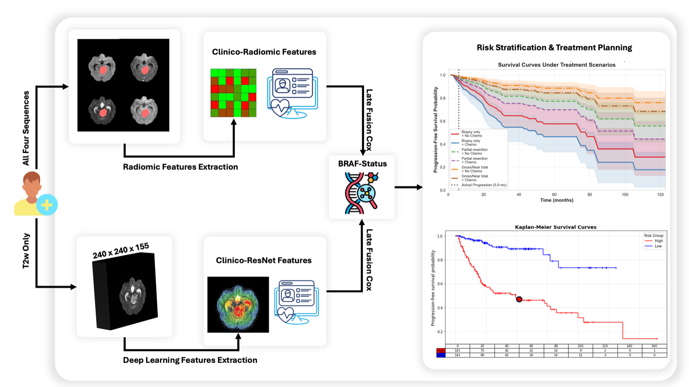

Uncertainty-Aware Multimodal Survival Modeling in Pediatric Low-Grade Glioma
Pediatric low-grade gliomas are the most common central nervous system tumors in children, and their management is a balance between disease control and lifelong treatment morbidity. Outcomes diverge sharply with resectability and tumor biology. Gross total resection is associated with ten-year progression-free survival above 85%, while deep-seated or midline tumors that require adjuvant therapy fall to roughly 50%. Molecular subtype is a principal prognostic determinant under the WHO CNS5 classification. KIAA1549-BRAF fusion is generally favorable, and BRAF V600E is unfavorable, particularly alongside CDKN2A deletion.
Radiomic approaches improve risk stratification over clinical variables alone, but they depend on tumor segmentation and multiparametric acquisition, which limits how well they scale across institutions. Like most survival frameworks, they also report individualized risk as a point estimate that implies more precision than the data support. This study asks whether transfer-learned deep features from a single T2-weighted sequence can replace that pipeline, and what molecular subtype adds once clinical and imaging information are already in the model. Risk scores from a clinico-imaging model and a clinical-molecular model are combined by late fusion, and bootstrap resampling attaches a confidence interval to every patient’s prediction.
Published American Journal of Neuroradiology, 2026 · doi:10.3174/ajnr.A9550